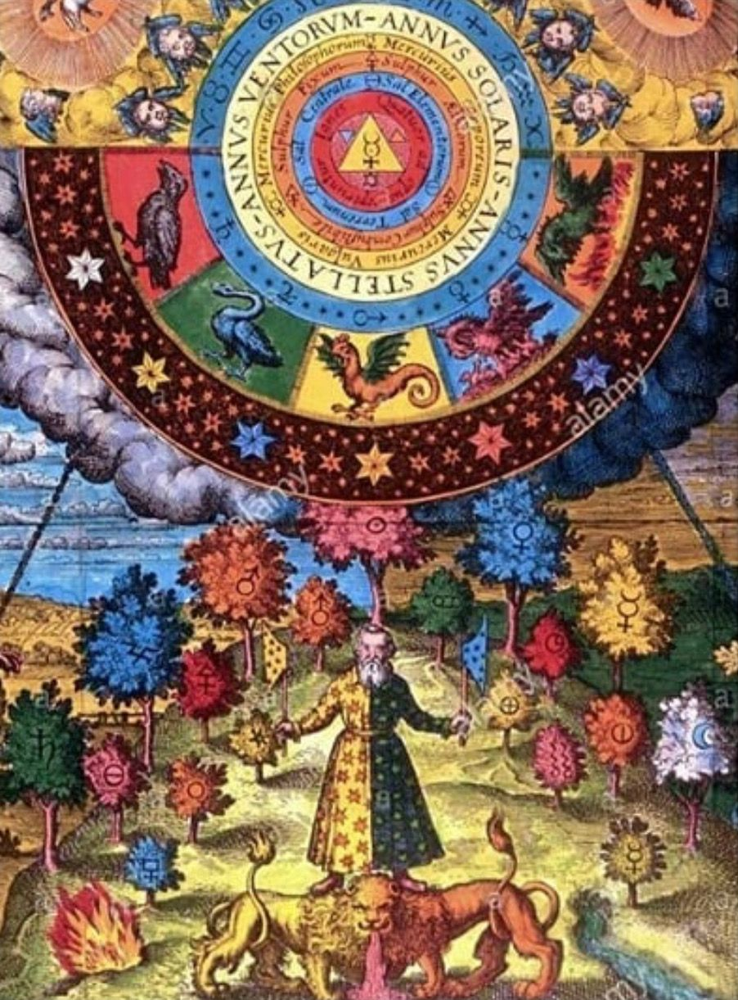

9: Casa De Luna üåõ
Ever heard of Hollywood from Earth, where nothing is as it seems, everybody is dating the same people, and everything and everyone is trying to trick you?
Yeah, same rules apply here buddy. Lots of glitz and glam, you might discover your magic gifts, and your emotions may run wild. Don't get seduced by the illusions as you:
- Enjoy the hedonism (18+)
- Learn how to do YOUR real-deal magic
- Get in touch with the moon magic, water & your emotions
- Fall in love with things that don't exist
Remember, this is a plane of illusions and magic. There's plenty to enjoy, but don't get too wrapped up in your delusions of grandeur. If you get trapped here, who knows if you'll ever get to...
8: Egghead Land ü뮂Äçüî¨
Affectionately dubbed Egghead Land by every other District due to the hyperfocus of logic and intellectual pursuits, this is the highest level of higher learning one could hope to achieve.
Are you the type who knows that they're the smartest in every room they step in? Was getting a Master's degree not enough for you? Then come enjoy what this big college has in store for you:
- Literature from every dimension
- Learning the highest sciences
- Multiversal classical music
- Chance to become a polygot in seconds and lord it over your dumber friends
Don't let your head swell up too much, though. If you need to turn your brain off for a second and do the opposite, then there's a District for you!
7: Palace Of Passion üíö
Are you emotionally dead inside from all of the reliance of cold logic your whole life? Are you a sucker for shows and movies that hit you right in the feels? Are you a passionate creative who loves to express their feelings?
Are you craving some love? Are you in love with L O V E ???!!!
I'm getting emotional just thinking about how much fun you'll have when you get into:
- Creating masterpieces
- Multiversal karaoke with the chance to sign a horrible record deal
- Watching all the Korean soap dramas that can, will, and have been made
- Go shopping in the most beautiful shops in the multiverse
- Begin to grasp the concept of love in all forms
I was told that if I tried to make more love puns I'd be hurt, so I'll do my best to stay safe and introduce you to your next District!
6: Casa De Sol üåû
Whew, after spending time on either side of the fence via the Passion or The Eggheads, it would probably do you some good to find a neutral ground to avoid getting stuck in one mode of being. Luckily, thats why the Casa De Sol exists.
The Casa De Sol is the ideal spot for getting a glimpse of what you'll be like after evolving from the other Districts! You'll be able to do everything from before, just without the hypnosis and polarizing aspect, like:
- SALUTE THE SUN
- Meet talking lions who can set themselves on fire
- Pet said lions without burning yourself or getting eaten
- Learn solar magic
- Embrace your inner pyromaniac without consequence
- Unwind and tan without getting a sunburn
- Meet your doppelganger who has their life together and get mentored by them
- Do everything from before, but with ✨ balance ✨
Okay, maybe it's a bit sun-centric. But it could get a little dark in the previous districts if you didn't shed a light on what you experienced. At least now you're aware of some of the trappings of leaning towards one side or the other, right?
You'll need that sense of balance as you go further into the city, 'cause it'll get reeeeeeal dangerous in:
5: Warzone ‚öîÔ∏èüíÄ‚öîÔ∏è
ARE YOU READY FOR CONFLICT? DO YOU LOVE TO ARGUE?! DO YOU WANT TO STOP BEING A DECENT HUMAN BEING AND ACT ON THOSE URGES THAT WOULD GET YOU LOCKED BEHIND BARS?! DO YOU LOVE COMPETITION AND SHOWING YOUR OPPONENT NO MERCY?!
Then step right up, bare your fangs, and get ready to enter the WARZONE!!!! This is a fan favorite, affectionately known as the PvP server, because every little ounce of conflict?
IT'S HERE!
From being the bad guy in a argument with a toddler, to being the most sadistic walking force of carnage on the battlefield, come on down to enjoy yourself as you:
- Crush all of your enemies!
- Act on those horrible, intrusive thoughts without guilt!
- Rack up the best K/D ratio you can!
- SHOW NO MERCY!
- Be the !#@hole you've pretended not to be your whole life!
- Master EVERY form of combat there is, and DESTROY!
- Go to war, but with respawns!
We STRONGLY recommend taking a chill pill and going to the adjacent District before you go to any other after this one, because that bloodlust is super potent and we'd hate for the angels and higher guardians to come down on your head...
Balance is key the further into the city you go, remember that!
4: The Castle Of Creation

If you went to the Warzone first and it was too much for you, we get it. With all of that wanton destruction, it can be a bit tramuatizing if you don't understand why it's necessary.
That's why the Warzone goes hand in hand with the Castle of Creation. If you've ever fancied yourself a boss of the boss, the top dog on the food chain, the king/queen of the land, then this is where you would go. You can do the following here:
- Play the sims but with real beings
- Roleplay as the ruler you've always wanted to be
- Earn the love, admiration, and undying loyalty of your subjects
- Pardon criminals and give them a second chance
- Live in splendor and royalty, forever
- Wear the fanciest of fancy crowns
- Have peace, forever.
A LOT of people end up getting stuck here, because there isn't any conflict. Everybody pardons everything, everybody loves everything. Everybody has everything. 'Tis a great place to stay, but watching everything go smoothly for enternity can bore even the nicest of people sooner or later...
Just remember to balance things out and seek the middle ground, other wise you'll get stuck.
A word before we head up to the last three districts... not much is known about them. The few that do reach the last triad don't come back eager to share what goes on up there in explicit detail.
All we know is that these are the "orignal" Districts, where the rest of the Districts came from. The main allure to these is actually getting to experience them! Are you a cut above the rest? Then lets see how you'll like...
3: The Black Sea ⚫️

I've met only one person who's been here, came back, and actually wanted to speak on what they witnessed.
"Any and everything. It's just dark, cold, and overwhelmingly... feminine??? I think??? Felt like I was in the womb, but that I could get anything that I wanted."
Yeah, I understood just as much of that vaugeness as you did, but it's got to be an experience. When I asked what you could do up there, they told me:
- ???
- Understood what it meant to be a woman in all aspects
- Something about receiving the Great Mother's wisdom
- Learn one half of space-time magic, the space part
- Either become forever scarred by the darkness or get over your fear of it
- Learn how to navigate and see without your physical eyes
After getting that little bit of info, they kinda zoned out and started talking about knowing the secrets to how we're born and stuff. Great Mother this, the Black Womb that... the really adventerous, thirsty for knowledge types go to this District, as well as...
2: Seed Of The Cosmos✨
Unlike the other one, a lot of people tend to go to this one, mainly because the Black Sea is reportedly absolute darkness. On the other hand, the Seed Of The Cosmos is the brightest District there is! Almost obnoxiously so.
Said to be the BIG step up from the Castle of Creation, when people came back from here, they needed a few months to recover and be able to expound on what they did. Some say they:
- Created blueprints for their own pocket universes
- Created time
- Changed the Zodiac signs around to make everyone Virgos, the best sign
- Understood that with great power comes great responibility
- Became their own father and resolved any daddy issues the hard way
- Learned the other half of space-time magic
There's one more District to aspire towards, but this one requires a warning.
Nobody who goes to the last District... comes back as the same person.
The Palace Of Brahman üëë
I met a yogi in the Warzone, who seemed quite out of place in such a hostile environment like that. We had a quick chat, avoiding certain death at every other second while enjoying some ginger cinnamon tea.
After we made our escape and went over to the Casa De Sol, he told me about reaching the last district. The look in his eyes told me everything I needed to know as he chuckled darkly to himself.
"The Palace of Brahman? Oh, nobody who isn't ready to rest can even get near it. My master had a vision of it many centuries ago, right before it was his turn to visit. When he entered the realm via his vision, he remembered being able to do the following:"
- Achieve eternal rest and peace
- Gain knowledge of EVERYTHING in existence
- Beat the "game"
- ???
- ???
- ???
- Learn how boring perfection is
- Ride a lightning bolt to spice things up again
Every person that I know who went, I've never seen them as I knew them again. Every now and then, between jumping from District to District, I meet people and beings who swear that they know me and that they're waiting for the day I get invited to the Palace. Sounds kind of spooky if you ask me, but riding a lightning bolt sounds pretty fun...